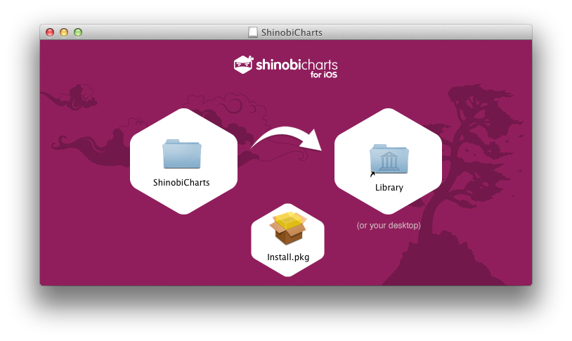
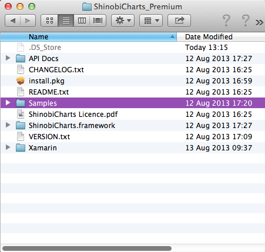
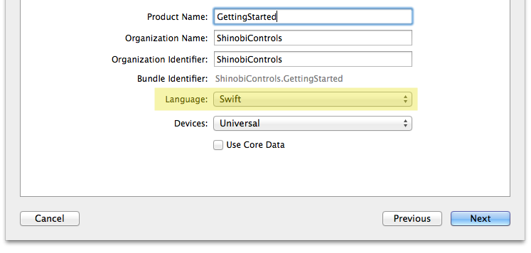
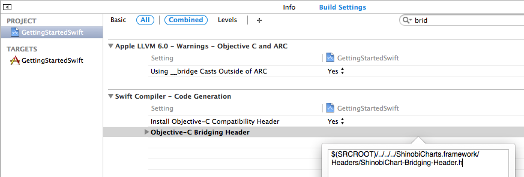

quickstart-Swift Document
quickstart Swift
Introduction
This is a brief introduction to using the ShinobiCharts component with the Swift programming language. This quick start guide will walk you through a series of simple steps introducing the key features of the charting library, which includes supplying data to the chart via the datasource, simple styling and configuration of the labels, title and axes.
At the end of this guide you will have created the following chart:

Installation
ShinobiCharts now ships with an installer, to make it easier to get started. To run the installer open the ‘ShinobiCharts.dmg’ file which you downloaded from ShinobiControls and run ‘install.pkg’. When it opens up, it should look as below.

The easiest way to install the ShinobiCharts framework is to run the ‘install.pkg’ file. This will install the framework into Xcode for you, along with the framework documentation. This means you can add the framework to your project in the same way as you would any of the frameworks which are automatically shipped with Xcode.
If you don’t want to run the installer, the framework is also contained within the ‘ShinobiCharts’ folder in the disk image. Regardless of whether you ran the installer, you should copy this folder onto your machine. Drag the ‘ShinobiCharts’ folder onto the Desktop icon in the disk image. This will copy the folder onto your desktop.

The ‘ShinobiCharts’ folder contains:
- A copy of the framework.
- A copy of the documentation for the framework.
- A set of samples to demonstrate getting started with ShinobiCharts.
- An uninstall script for uninstalling the ShinobiCharts framework & documentation from Xcode.
- The Xamarin.ios version of the framework (only available with the Premium framework).
- A README file with setup steps.
- A change log stating the changes made in each release.
- A copy of the ShinobiCharts Standard Licence.
- A text file containing the version number of the framework.
Setting up the project
Start-up Xcode and create a new project via File / New / Single View Application. On the next screen that appears, be sure to select “Swift” as the language to use for your new project.

Within your newly created project, add a reference to the ShinobiCharts framework. If you’ve installed ShinobiCharts using our installer, you can add this in the same way as you would any of the standard Apple frameworks. Select your project target, and switch to the Build Phases tab. Open the Link Binary With Libraries section, click the Plus button, find the entry for ShinobiCharts.framework, and click Add.
If you have just copied the framework onto your machine, the easiest way to add it to your project is to locate the ShinobiCharts.framework and drag it directly into your project.
ShinobiCharts makes use of a few other frameworks, so add the following as well:
- Security.framework (Trial Version only)
- QuartzCore.framework
- OpenGLES.framework
- CoreText.framework
- libc++.dylib
Linking to the bridging header file
In order for Xcode to use an Objective-C based framework in Swift, it needs to have a bridging header file. We have included a bridging header file in our framework. To link to it, you must open the build settings for the your new target, and search for the Objective-C Bridging Header setting. You must then provide the path to the ShinobiChart-Bridging-Header.h file, which is inside the Headers directory of the ShinobiCharts.framework.

In the screenshot above, the framework is three directories above the root of the project, hence it is set to
$(SRCROOT)/ShinobiCharts.framework/Headers/ShinobiChart-Bridging-Header.h
This path will vary based on the location of the framework on your file system.
Adding a Chart
The first step is to create an instance of the chart and add it to the view. Open up the ViewController.swift file and add update the viewDidLoad() method:
let margin = (UIDevice.currentDevice().userInterfaceIdiom == .Phone) ? CGFloat(10) : CGFloat(50)
let chart = ShinobiChart(frame: CGRectInset(view.bounds, margin, margin))
chart.title = "Trigonometric Functions"
This instantiates the chart object, and sets its title. Note that the margin around that chart depends on the device form factor. A smaller margin is used on iPhone devices. The ShinobiChart object is a UIView subclass, so respects resizing masks and auto-layout. Further down the same method add the following:
chart.autoresizingMask = .FlexibleHeight | .FlexibleWidth
This ensures that the chart frame is adjusted when the device orientation changes.
If you have downloaded a trial version of the ShinobiCharts you will have been issued with a trial license key. Add the key that you were supplied with at the location indicated below.
chart.licenseKey = "" // TODO: add your trial licence key here!
The next step is to add the axes to the chart. In this example both the X and Y axes are linear, although the chart also supports date-time and category axes. Further down the same method add the following:
// add a pair of axes
let xAxis = SChartNumberAxis()
xAxis.title = "X Value"
chart.xAxis = xAxis
let yAxis = SChartNumberAxis()
yAxis.title = "Y Value"
chart.yAxis = yAxis
Now that the chart is configured, the final step is to add it to the view. Add the following to the end of the method:
view.addSubview(chart)
Before you can see the chart in action, you need to supply some data, which brings us onto the next step …
Adding a Datasource
In order to render your data within the chart you need to supply a ‘datasource’, this is a class that adopts the SChartDatasource protocol methods.
If you have worked with
UITableViewthe idea of a datasource should be familiar to you. The shinobichart shares the same concepts both of a datasource, for supplying data, and a delegate, for reacting to user interactions.
Within ViewController.swift adopt the datasource protocol via the class extension, that Xcode generated for you, as follows:
class ViewController: UIViewController, SChartDatasource {
The SChartDatasource protocol has four required methods. We’ll take a look at each of them in turn.
The first method numberOfSeriesInSChart is used to inform the chart how many series you wish to render. Add the following implementation, with a hard-coded value of two:
func numberOfSeriesInSChart(chart: ShinobiChart!) -> Int {
return 2
}
The next method, seriesAtIndex is used to supply each series to the chart. The series objects describe the visual appearance of each series, but not their actual data values. Add the following to the view controller in order to return two different line series:
func sChart(chart: ShinobiChart!, seriesAtIndex index: Int) -> SChartSeries! {
var lineSeries = SChartLineSeries()
if index == 0 {
lineSeries.title = "y = cos(x)"
} else {
lineSeries.title = "y = sin(x)"
}
return lineSeries
}
The next method, numberOfDataPointsForSeriesAtIndex, is used to specify the number of data points within a specific series. Add the following implementation below:
func sChart(chart: ShinobiChart!, numberOfDataPointsForSeriesAtIndex seriesIndex: Int) -> Int {
return 100
}
In this example, both series have 100 points, but they do not have to have the same number.
The last method required by the protocol is dataPointAtIndex forSeriesAtIndex, which the chart uses to request the value of each individual datapoint for each series. The returned datapoint must adopt the SChartData protocol, which specifies xValue and yValue properties. The charting framework supplies a concrete implementation of this protocol, SChartDataPoint, however, you have the option of implementing this protocol with your own data-objects in order to avoid the need to maintain two copies of your data.
Add the following implementation:
func sChart(chart: ShinobiChart!, dataPointAtIndex dataIndex: Int, forSeriesAtIndex seriesIndex: Int) -> SChartData! {
let datapoint = SChartDataPoint()
// both functions share the same x-values
let xValue = Double(dataIndex) / 10.0
datapoint.xValue = xValue
// compute the y-value for each series
if seriesIndex == 0 {
datapoint.yValue = cos(Double(xValue))
} else {
datapoint.yValue = sin(Double(xValue))
}
return datapoint
}
Now that the datasource is implemented, you can add the following to viewDidLoad:
chart.datasource = self
At this point if you build and run, you should see a couple of series:

With the current implementation each individual datapoint is requested via the datasource. If you have a lot of data, and it is already present in memory, you can optionally make use of the dataPointsForSeriesAtIndex seriesIndex protocol method. Your implementation of this method should return all the points for a given series, and this method will be used instead of dataPointAtIndex forSeriesAtIndex.
Adding Labels and Basic Styling
The chart in its current state is a little plain! This section will build on the simple chart that you have created and add a bit more style.
Firstly, the axes could do with having some labels. Also, the Y axis could do with a bit of padding around the top and bottom values to make it easier to see the top and bottom of the curves.
Open up ViewController.m and edit the axis creation code as follows:
let xAxis = SChartNumberAxis()
xAxis.title = "X Value"
chart.xAxis = xAxis
let yAxis = SChartNumberAxis()
yAxis.title = "Y Value"
yAxis.rangePaddingLow = 0.1
yAxis.rangePaddingHigh = 0.1
chart.yAxis = yAxis
It would be nice to see the legend on the iPad, where there is much more screen space to play with. Add the following to the viewDidLoad() method:
chart.legend.hidden = UIDevice.currentDevice().userInterfaceIdiom == .Phone
One of the most powerful features of the Shinobi charts is their gesture-based interactions. Enable pan and zoom on each axis by adding the following code:
yAxis.enableGesturePanning = true
yAxis.enableGestureZooming = true
xAxis.enableGesturePanning = true
xAxis.enableGestureZooming = true
These properties allow the user to pan the chart with a single-finger pan gesture, and zoom using two-finger pinch.
Finally, enable area fill by adding the following just after each series is created within seriesAtIndex
lineSeries.style().showFill = true
Each series has a style object associated with it, where the style type depends on the series type. A line series has a style object of type SChartLineSeriesStyle. These objects have a a number of properties which you can adjust including line color, thickness and the colors used for gradient fill.
To see the effect of the few simple changes you have just made, build and run:
Now that you have created a simple chart, why not have a go at creating a column, or pie chart?